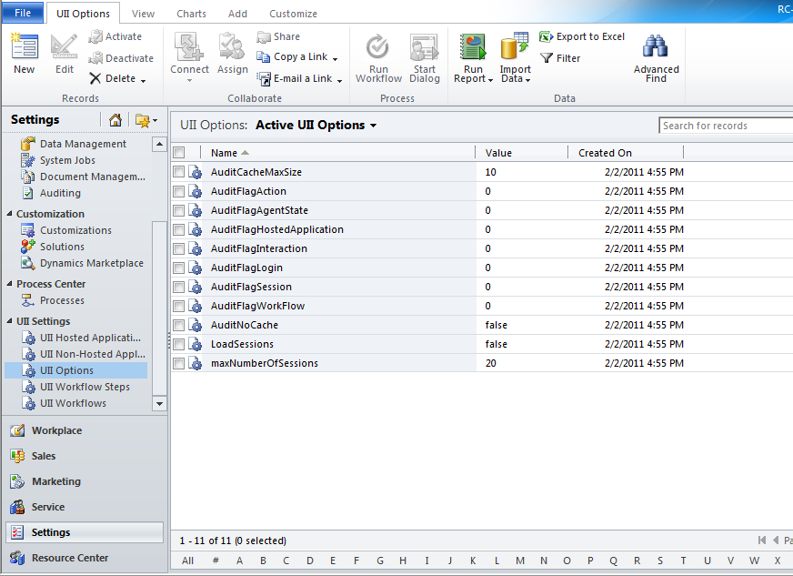
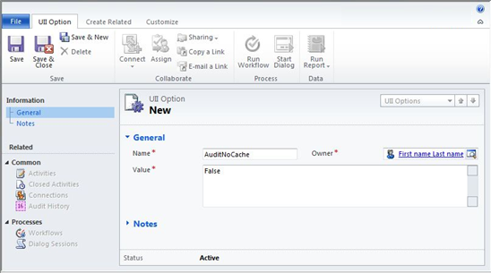

UII Administrator can use the UII Option management features to create a new setting.
To create a new setting
- Using CRM administrator credentials, log on to Microsoft Dynamics CRM.
- In the left navigation pane, click Settings > UII Settings > UII Options. The Active UII Options page appears, as shown in the following illustration.

The following table describes the audit flag settings.
Audit flags
Explanation
AuditCacheMaxSize
When this flag value is set to 1, the number of audit records cached before saving on to the server is 1 record.
This option works only if the AuditNoCache is False.
AuditFlagAction
When this flag value is set to 1, audit records are created whenever an action is fired. In the current application, this is used in multiple places :
For more information about actions, see the UII Development Guide.
AuditFlagAgentState
When this flag value is set to 1, audit files are created when the status of the agent changes.
AuditFlagHostedApplication
When this flag value is set to 1, audit files are created when a hosted application is started or gets the focus.
AuditFlagInteraction
This is used to detect any UII context change.
AuditFlagLogin
When this flag value is set to 1, audit records are created when an agent logs in.
AuditFlagSession
When this flag value is set to 1, audit records are created when a session is created or there is a session switch.
AuditFlagWorkflow
When this flag value is set to 1, audit records are created when a UII workflow is started or closed.
AuditNoCache
If this is set to True, the audit records are saved dynamically to the server without any caching.
LoadSessions
If this is set to True, the agent can use the option of loading sessions.
MaxNumberOfSessions
When this flag value is set to 1, the maximum number of sessions that can be loaded on the Integrated Agent Desktop is one session.
This option works only if the Load Session option is set to True.
- Click New. The New Settings Information page appears, as shown in the following illustration.

- In the Name box, type the settings name, and type the value of the settings in the Value box. In the Owner box, click the Search icon to locate and select the owner, and then click Save or Save and Close.